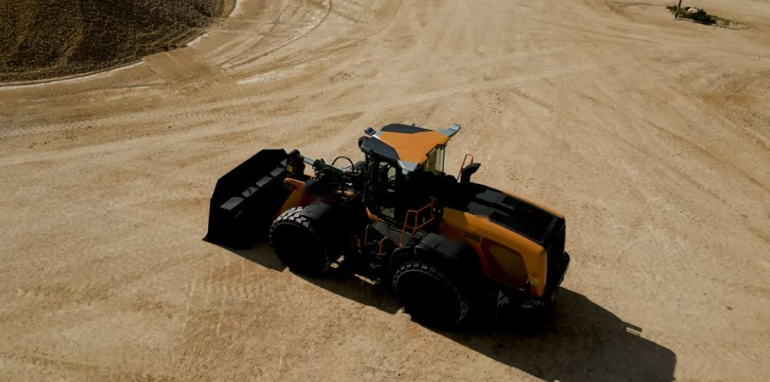
Abrupt reversals and hard braking raise the risk of losing control on site.
Impulsive throttle and braking burn measurably more fuel in every cycle.
Repeated shock loads stress engine, transmission and brakes.
The three effects share one cause, the way the machine is driven, and that cause leaves a signature in the standard CAN signals the machine already exposes. The project turns those signals into two independent 0–100 indicators: one for the operator, one for the machine.
Four stages, each with a clear input and output. Every step must explain which subsystem is stressed, and by how much: interpretability first.
A three-signal state machine on speed, boom and bucket angle finds Loading → Reverse → Unloading.
19 statistics per cycle (mean, std, max, RMS, jerk) over kinematics, pedal, braking and clutch.
Separability tests, mRMR selection, cost-sensitive SVM, sigmoid calibration, Normal-referenced stress.
Two cab views (style / stress) plus daily and monthly dashboards with operator filters.
Two independent outputs, never merged into a single number.
Load at the pile, reverse while raising the boom, advance to the truck and unload. It repeats many times per shift with the same geometry, so two cycles can be compared like two repetitions of the same experiment: what changes is how the operator executed them.
v > +2 km/h · boom < −30° · bucket −20°…+3°v < −2 km/h · boom < 0° · bucket > +10°|v| < 2 km/h · boom > −20° · bucket < −20°A transition fires only when all three conditions hold; a valid cycle gets a unique ID.
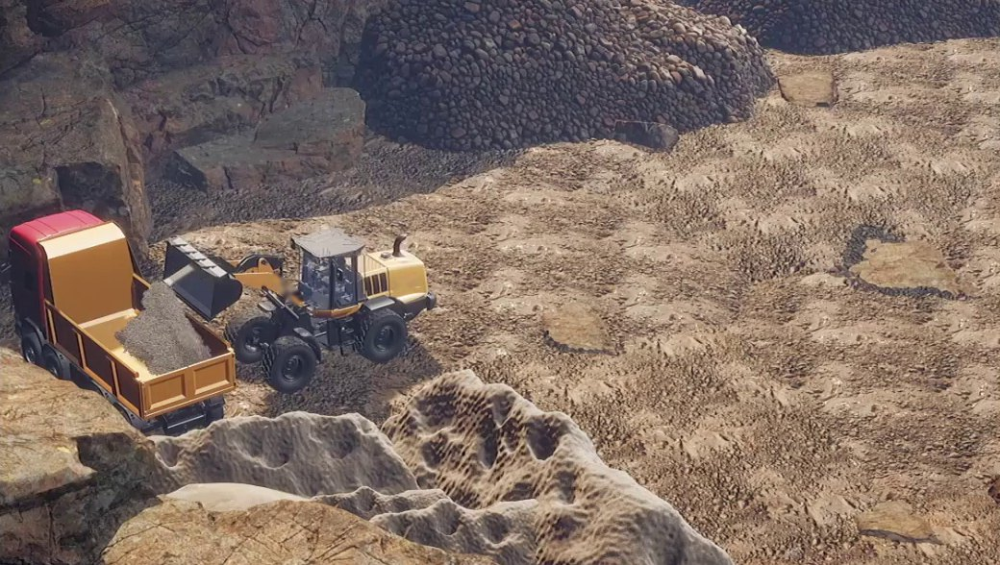
A multi-operator Normal reference means "normal" covers many drivers, not one person's habits. The imbalance is not resampled: it is handled by the SVM cost function.
| Role | Signals |
|---|---|
| Segmentation | vehicle speed, boom angle, bucket angle |
| Driveline | transmission input speed, engine speed, torque-converter slip |
| Operator commands | accelerator pedal, inching / clutch pressure |
| Reference only | fuel rate, engine load |
Highlighted: the 7 features kept by mRMR + cross-validation.
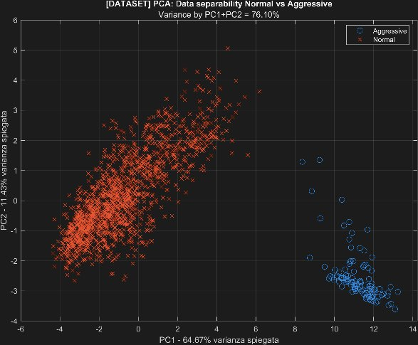
Unsupervised checks and permutation tests come first. If the boundary were not in the data, no classifier result would be credible.
Stratified 75/25 hold-out, scaling fitted on the training set only, mRMR ranking on the training set, then 5-fold cross-validation picks the smallest feature set that reaches the best Balanced Accuracy.
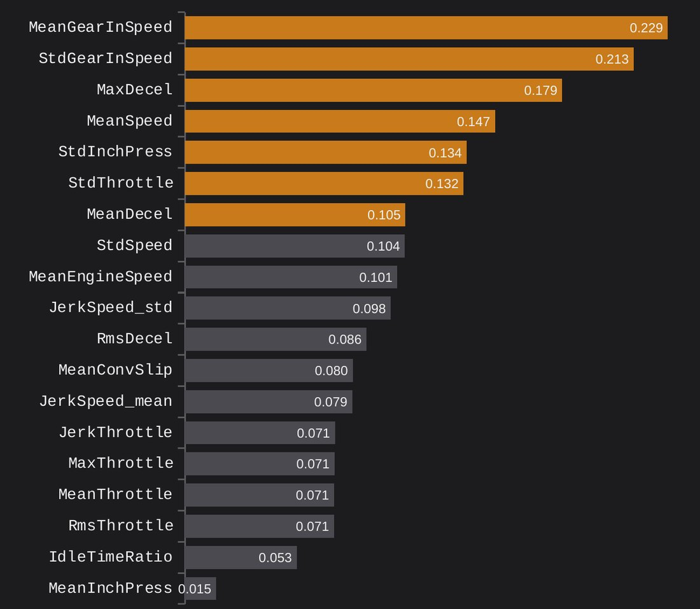
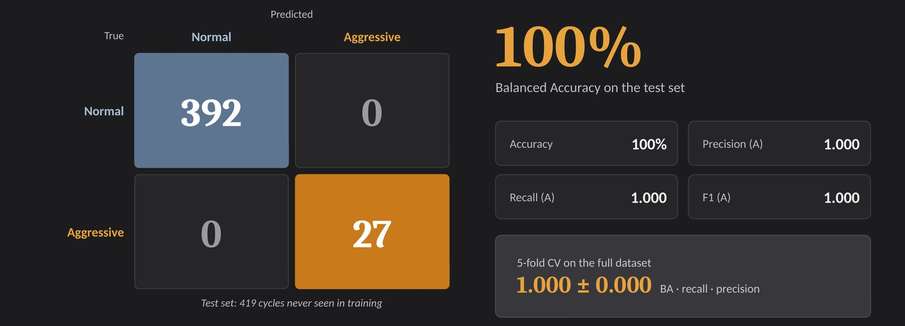
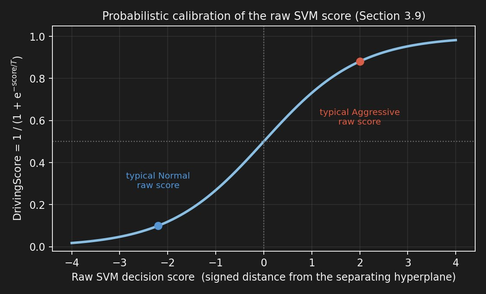
Median OSS: 12 for Normal cycles, 86 for Aggressive ones. No cycle of either class falls between 38 and 66. OSS says how the operator drives; it does not say what the machine is going through. That is the job of the MSS.
No labels needed. Each feature is compared with the distribution of Normal cycles only, then grouped by subsystem.
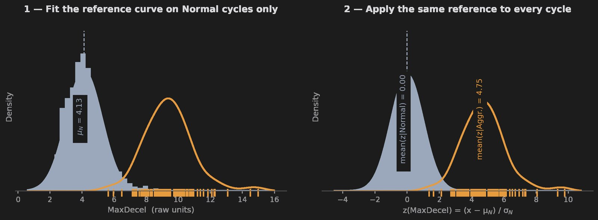
z = (x − μNormal) / σNormalStress(z) = 100 · (1 − e−max(z,0)/2): zero below the Normal mean, saturating for large deviations.| Subsystem | Features |
|---|---|
| Fuel | mean fuel rate of the cycle |
| Engine | MeanEngineSpeed MeanThrottle MaxThrottle |
| Transmission | MeanGearInSpeed StdGearInSpeed MeanInchPress StdInchPress |
| Brake | MeanDecel MaxDecel RmsDecel |
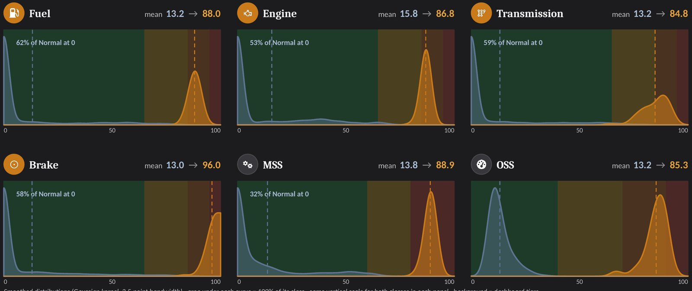
No cycle has high OSS with low MSS. But 45 Normal cycles reach MSS 60–73 with OSS < 40: harder cycles that driving style does not explain (brakes lead in 47% of them). About half of the ranking is shared; the other half is what each indicator adds.
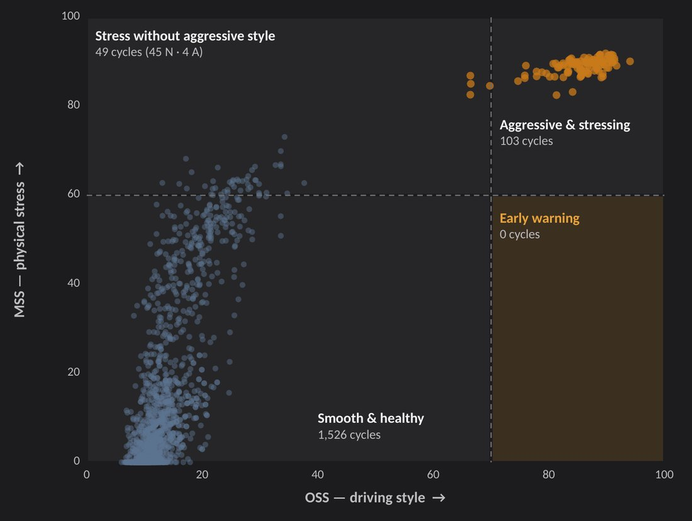
The same 0–100 scale and colours on both views. The operator never sees a model, only a score and a tip.
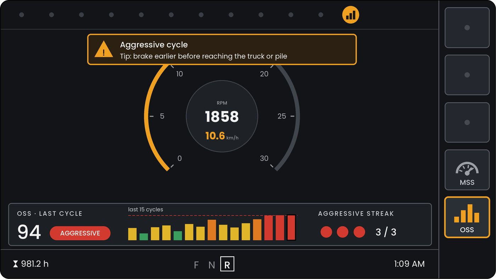
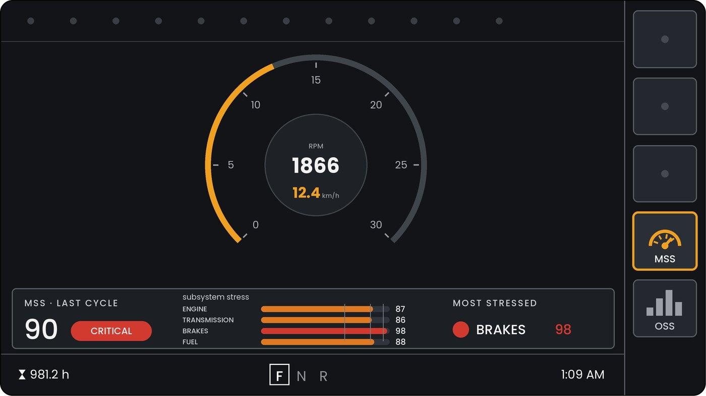
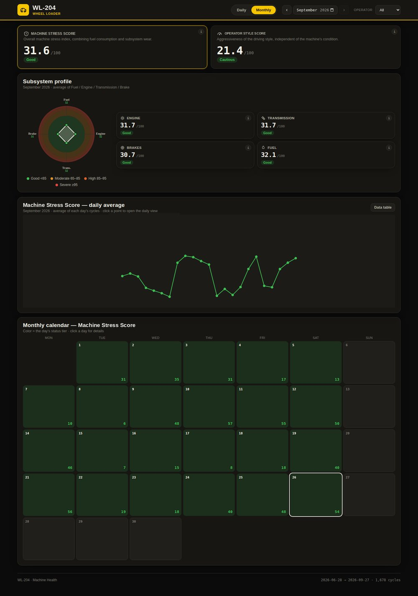
"What happened in this shift?" Cards, radar and the cycle-by-cycle MSS sequence.
"How is this machine trending?" Daily average plus a calendar heat-map coloured by tier.
Calendar day → daily view → individual cycles. A red day is never a dead end.
Coach one operator; check that a trend is not driven by a single outlier.
For the people behind the wheel
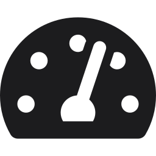
Machine Stress ScoreFor the machine and the fleet
Each component lives in its own repository in the course organisation, with a README describing the whole project, its architecture and the specific component.
MATLAB pipeline: separability tests, mRMR selection, cost-sensitive SVM, Operator Style Score and Machine Stress Score. Includes thesis and slides.
perfez-2526-DrivingStyleAnalysis-degiorgi →The page you are reading, published with GitHub Pages.
perfez-2526-presentation-degiorgi →